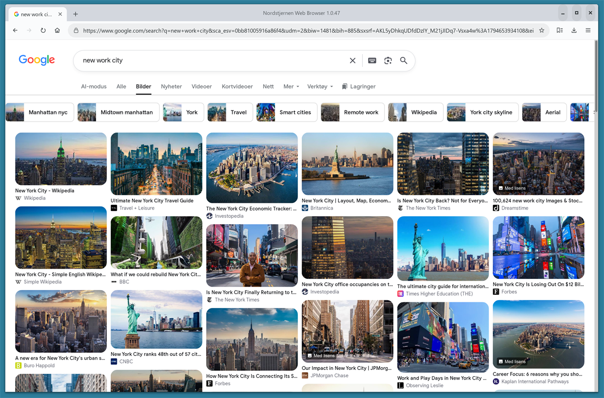

Navigateur Web Nordstjernen
Nordstjernen est un navigateur web, écrit de zéro en C, axé sur la prise en charge des standards HTML et CSS. Il fonctionne sous Windows, Mac et Linux, avec un portage Android en cours. Nordstjernen est développé en Norvège.


Standard HTML. Le comportement est mesuré par rapport au texte de la spécification, section par section, et non par rapport à un autre navigateur.
Sécurisé. Conception d'un processus par onglet — chaque onglet s'exécute dans son propre processus de rendu isolé (seccomp + Landlock sous Linux), communiquant avec l'interface via IPC et des framebuffers en mémoire partagée. Pas de JIT.
Minimalisme. Tout le moteur tient dans un corps compact de C — assez petit pour qu'une seule personne le lise et l'audite de bout en bout.
Nordstjernen n'a pas de JIT, ce qui le rend bien plus sûr, tout en restant suffisamment rapide. Il n'embarque aucune forme de télémétrie.
spécifications
| langage | C · entièrement auditable |
|---|---|
| html / css | lexbor (analyseur, WHATWG URL, sélecteurs) |
| javascript | quickjs-ng — interpréteur de bytecode, pas de JIT |
| webassembly | WAMR — interpréteur derrière l'API JS WebAssembly |
| images | Wuffs (PNG / GIF / BMP / JPEG / WebP sans perte) |
| interface | GTK 4 · mise en forme du texte avec Pango · une fenêtre par page, pas de barre d'onglets |
| réseau | libcurl · HTTP/2 |
| durcissement | un processus par onglet · bac à sable seccomp + Landlock sous Linux · pas de JIT |
| confidentialité | pas de télémétrie · cookies cloisonnés · HSTS · CSP |
| plateformes | linux · windows · macos · android (portage en cours) |
| licence | GPL-3.0-or-later / NSL-1.0 → MIT après 10 ans |
télécharger
Téléchargez Nordstjernen 1.0.47 pour votre plateforme. Tous les fichiers sont sur GitHub.
| Windows | Microsoft Store |
|---|---|
| Android | Google Play |
| macOS | nordstjernen-1.0.47-macos-arm64.dmg |
| Debian 13 | nordstjernen_1.0.47_debian13_amd64.deb |
| Ubuntu 26.04 | nordstjernen_1.0.47_ubuntu26.04_amd64.deb |
| Fedora 45 | nordstjernen-1.0.47-1.fc45.x86_64.rpm |
| Linux (portable) | nordstjernen-1.0.47-linux-x86_64.zip |
| Source | 1.0.47.tar.gz |
| GitHub | github.com/nordstjernen-web/nordstjernen-sol-browser/releases/tag/1.0.47 |
langues
English · 中文 · हिन्दी · Español · Français · العربية · বাংলা · Português · Русский · اردو · Bahasa Indonesia · Deutsch · 日本語 · Kiswahili · मराठी · తెలుగు · Türkçe · தமிழ் · Tiếng Việt · 한국어 · Norsk